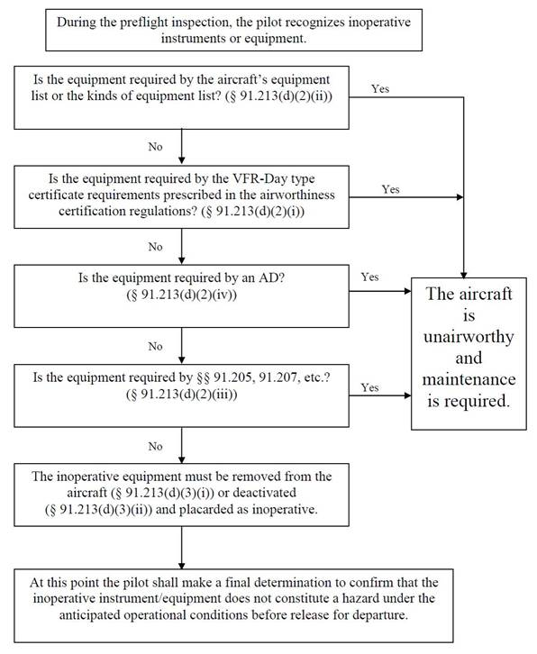

VFR Flight Training Note
Flight Training #1 - Introductory Flight 02/07/2020 0.8HR $99 Erik Levin
- Cruising Speed for Cessna 172 is 2300RPM around 100 knot
- Fuel Primer needs to be pumped 2-6 times during winter.
- Dry gyro need to be adjusted every 15 min
- Always face the engine to the wind when doing the pre-takeoff engine check
- Obtain a weather briefing
- Flight Service 800-992-7433
- Press 1 then 46
- “Hello, I am a student/private pilot and I need a standard briefing for a VFR flight”
- “I am flying a Cessna <tail number>, KLAF to <destination> OR local flight out of KLAF, staying within 25 nautical miles. Departing Lafayette <UTC Time> Zulu, <Flight Duration> hour plus <Flight Duration> min enroute at <Altitude> feet.
- ATC Ground Radio Talk Example
- “Lafayette Ground Vader 99 Purdue Aviation Taxi with Lima”
Flight Training #2 - 4 Fundamentals 02/11/2020 1.2HR $475.5 (With GS) Erik Levin
- Increase engine RPM to 2300.
- Maintain 10 degree pitch
- Waiting until airspeed is around 80-75(Different depends the airplane)
- Adjust trim as desire once airspeed stable
- At the same time, push right router to counter the engine spin
- Push the nose back to 0 degree
- Gain speed back to 100 knot
- Reduce engine RPM to maintain 80 knot
- Trim as needed
- Constant Speed descending
- Carb Heat on (Because the RPM is below 2100 RPM)
- Change RPM to 1500 RPM
- Maintain 0 degree pitch
- When airspeed stable, adjust trim
- Turn off Carb-Heat
- Turn RPM to 2300
- Maintain 0 degree pitch until airspeed stable at 100 knot
- Turn yolk 10-30 degree bank
- Maintain desire altitude
- Recovering turns start at ½ of your bank angle.
- Use the router to maintain the bubble in the turn coordinator.
Flight Training #3 - Complex Airplane 02/12/2020 1.2HR $298.61 Erik Levin
- For complex airplanes, prop handles push all the way in to max the rpm.
- Increase throttle to max
- Turn yolk into the direction of the wind for cross wind correction, push the yolk all the way in
- Push right router to maintain a straight line
- While accelerating before 55 knots, gradually release the cross wind correction by returning the yolk to the forward position
- At 55 knots, rotate.
- Maintain airspeed at 75 knots.
- At 700 ft above ground (1300ft in KLAF), turn to correct heading, exit the pattern.
- Continue climbing until reaching the desired altitude. At least 500 ft above pattern altitude and retract gears.
- Cruising for Complex Airplane
- Golden rule: Manifold pressure should always be less than RPM
- Once you reach the desired altitude and speed, you should adjust the prop to reach a desired manifold pressure for cursing of 21 mmHg.
- Before approaching the target airport, call the weather information to get wind, altimeter, and information code.
- Let the ATC know your approaching around 10 nm to the airport.
- Enter the traffic pattern at 45 degree angle at 1000ft above airport elevation
- Holding the pattern altitude in the downwind
- Do the landing checklist, full rich mixture, carb heat on, and push the prop handle all the way in to maximize the rpm.
- Once the airstrip is under left wing, we need to descend at 90 knot with 10 degree Flap, RPM set to 1500
- Once the airstrip is at the tip of the end of the left wing, we need to turn left, 30 degree bank, to be perpendicular to the airstrip. Once plane turned, change flap to 20 degree
- At Base leg, ask permission to land, while trying to find any aircraft also approaching.
- Turn left again to final once the airstrip is under the left wing again.
- If the altitude is too high, we turn the engine to idle.
- If the altitude is too low, we turn up the rpm of the engine for a bit.
- Points the head of the engine to the number on the airstrip and extend landing gear
- Maintain heading and add yolk and router (opposite direction depends on crosswind).
- Continuously pull the yolk back until touch down. Push break once the front wheel touched down.
Flight Training #4 - Traffic Pattern 02/14/2020 1.3HR $263.53 Erik Levin

Flight Training #5 - Slow Flight 02/14/2020 1.4HR $366.14 Erik Levin
- Turn Carb-Heat on
- Turn RPM to 1500
- Maintain altitude and slow down to a airspeed of 60-70
- Turn RPM to idle
- Maintain speed to 45-60 with pitch of the airplane
- If stall horn starts, increase RPM to maintain speed
Flight Training #6 - Wind Correction 02/15/2020 1.4HR $310.72 Erik Levin
- Turn the heading of the plane into the wind, and use try and error to maintain the airplane cruising.
- Cross-Wind Compensating Turns.
- Identify the wind direction
- Turn into the wind quickly and roll out slowly.
Flight Training #7 - Engine Failure 02/16/2020 1.5HR $340.52 Erik Levin
- AIRSPEED 68 KIAS
- FUEL SHUTOFF
- FUEL SELECTOR BOTH
- ELECTRIC FUEL PUMP ON
- MIXTURE FULL RICH
- MAGNETO SW BOTH
- If engine restarts:
- AIR SPEED 70 KT
- MIXTURE CUTOFF
- MAGNETO SWITCH OFF
- FLAPS FULL
- STBY BATT SWITCH OFF
- MASTER SWITCH OFF
- SEATS / SEAT BELT
- DOORS
- COMMUNICATE INTENT TO ATC 121.5
Flight Training #8 - Slow Flight 02/19/2020 1.5HR $390.20 Erik Levin
- Turn engine RPM to 1500
- Maintain altitude
- Turn 10 degree flap when airspeed under 100 kt
- Turn 20 degree flap when airspeed under 80 kt
- Adjust throttle to maintain slow flight speed of 45-55 kt
Flight Training #9 - Stall Recover 02/21/2020 2.3HR $592.42 Erik Levin
- Turn engine RPM to 1500
- Maintain altitude
- Turn 10 degree flap when airspeed under 100 kt
- Turn 20 degree flap when airspeed under 80 kt
- Adjust throttle to maintain slow flight speed of 45-55 kt
- Turn engine to idle and create stall by GRADUALLY point the nose up
- With an airspeed under 45 kt, a stall is created.
- POINT THE NOSE DOWN FIRST
- And push throttle all the way in
- Maintain pressure to prevent airplane head going over 10 degree pitch
- Once airspeed is above 60, Flap 10 degree
- Once airspeed is above 70, Flap off.
- Maintain climbing speed of 75
General Question from Aircraft Checkout Quiz:
- What personal documents are required to be in your possession when you fly?
- Airman Certificate
- Medical Document
- Government Issued ID
- What aircraft documents are required to be on board when you fly?
- Airworthiness document
- Registration
- Operating Handbook
- Weight and Balances
- Can you carry Passengers and cargo for compensation or hire?
- Who has the final authority for determining that your rental aircraft is airworthy?
- Who has the right of way when two aircraft are on final approach at the same time?
- Aircraft in lower altitude or aircraft on your right.
- Except when necessary for takeoff and landing, what are the minimum safe altitudes when flying over congested and un-congested areas?
- 1000ft above the highest obstacle (Congested)
- 500ft above the highest obstacle (Un-Congested)
- What altitudes should you use when operating under VFR in level cruising flight while on a cross-country flight?
- Flight direction 180-360 degree, Even thousand feet + 500ft.
- Flight direction 0-179 degree, Odd thousand feet + 500ft.
- What preflight actions are required to be completed by the pilot before each flight?
- Runway length, information of takeoff and landing
- Weather report
- Forecast
- Fuel requirement
- Alternative Airplane
- Know Traffic Delay, NOTAM
- You may not fly as a pilot of a civil aircraft within 8 hour after consuming any alcoholic beverage, or while having 0.04% blood alcohol content.
- When are safety belt and shoulder harnesses required?
- What is the minimum fuel reserve required for day VFR flight.
- 30min fuel daytime
- 45min fuel night time
- Does high humidity increase or decrease takeoff distance?
- How do you determine pressure altitude?
- By tuning the altimeter to 29.92
- Or use the formula
- What are the minimum FAR requirements for carrying passengers?
- Flight review every two year
- 3 Takeoff and Landing (Day)
- 3 Takeoff and landing where 2 at night (Night)
- What is the estimated TAS at 5000 ft and 65% Power?
- What RPM or combination of RPM and Manifold Pressure will produce approx 65% power at 5000ft?
- What is the fuel burn in gallons per hour from the last question?
Local Airport Question from Aircraft Checkout Quiz:
- What are the minimum visibility and ceiling requirements for VFR flight into Class D airspace?
- 3 Statute mile of visibility
- Ceiling 500ft below 1000ft above 2000 horizontal.
- On a sectional chart what does the magenta shading around KLAF indicate?
- What are the entry requirements for Class D Airspace?
- Establish two way radio communication with Tower
- What is the traffic pattern altitude for KLAF?
- 1000 ft above elevation, thus 1600ft MSL
- What is the minimum altitude for turning crosswind in the traffic pattern?
- 300ft below pattern altitude
Inoperative instrument Check

Inoperative instrument Definition
Airworthiness Directive: A document issued by the manufacturer for repair of a faulty component. All components listed on AD must be fixed before flying.
Type Certificate: A document that states the proper component to be installed on an aircraft such as an engine and propeller.
Special Flight Permit:
Airspaces Minimum
Airspace Chart
Personal Minimum (Updated 4/4/2020)
VFR Ceiling and visibility Limits:
- Traffic Pattern day - 1100ft - 5SM
- Traffic Pattern night - 1500 ft - 3SM
- Local Day 1500ft - 4SM
- Local Night 2000ft - 5SM
- Cross country day 3000ft - 5SM
- Cross country night 3000ft - 5SM
Temperature
- Day minimum of -15 C
- Night Minimum of -10 C
Fuel
- No less than 1 hour fuel reserves
IFR ceiling and visibility limits
Takeoff/Landing distances:
Winds
- 0 ° - 25
- 20 ° - 27
- 30 ° - 26
- 50 ° - 23
- 60 ° - 22
- 80 ° - 12
- 90 ° - 10
Types of Altitude
- Indicated Altitude: Altitude shown by the altimeter
- Pressure Altitude: The height above the standard datum plane
- Density Altitude: Pressure Altitude corrected for temperature
- True Altitude: The height above MSL
- Absolute Altitude: The actual height of the aircraft above the earth surface
- Calibrated Altitude: Indicated altitude corrected to compensate for any instrument error.
Altitude Facts
- 1 in. Hg. equals 1000 feet of indicated altitude.
- Colder temperature means lower indicated altitude, vice versa.